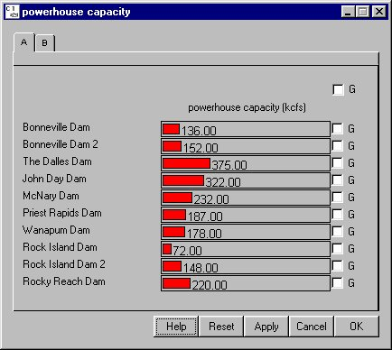

Selecting DamPowerhouse Capacity opens a window for setting how much flow each dam can put through its powerhouse before being forced to spill the remaining flow. Dams differ in their design, and different dams can accommodate differing amounts of flow through each powerhouse before being forced to spill excess flow.
This is a Slider Input window. Click on the letter tabs to page through the list of dams.

Powerhouse Capacity window